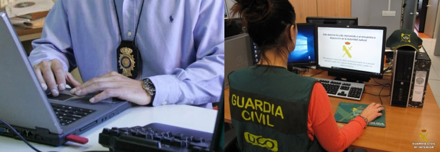

En España existen organizaciones como ESCERT que realizan análisis forenses para organismos privados y públicos. Estos servicios se prestan a aquellas organizaciones que han sufrido ataques informáticos y también se emplean para colaborar en la resolución de investigaciones donde existan datos digitales involucrados. Puedes acceder a la web de ESCERT pulsando aquí.
Este tipo de análisis en sistemas informáticos toma, cada día que pasa, más relevancia, puesto que muchos conflictos son resueltos gracias a la información tratada por sistemas informáticos. Es común ver intervenidos los ordenadores de delincuentes cuando se produce su detención, sean del tipo que sean.
El análisis forense informático siempre está presente en:
- Delitos donde se actúa directamente contra los equipos informáticos.
- Delitos donde los equipos informáticos contienen las evidencias.
- Delitos donde los equipos informáticos son utilizados para cometer el crimen.
En todos los países las fuerzas de seguridad poseen unidades dedicadas al análisis forense informático, tanto para delitos informáticos, como para delitos donde se ha utilizado el equipo informático para cometerlos. En España:
Brigada de Investigación Tecnológica del Cuerpo Nacional de Policía.
Grupo de Delitos Telemáticos de la Guardia Civil.